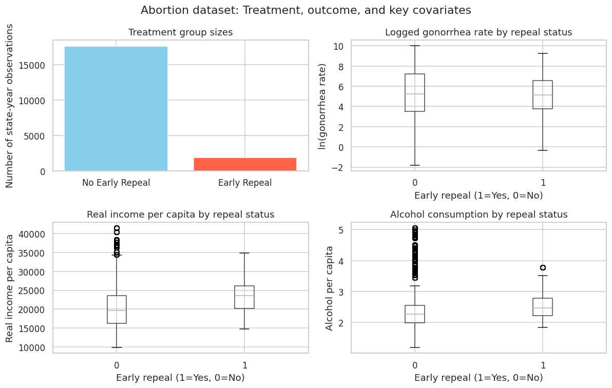
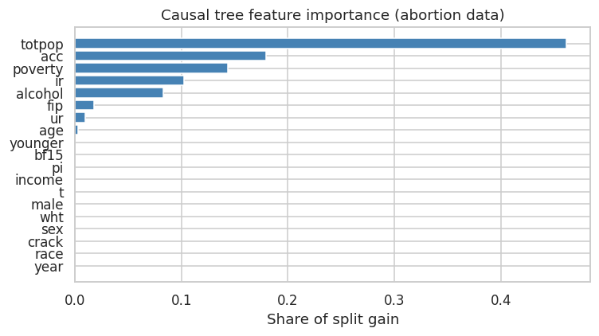
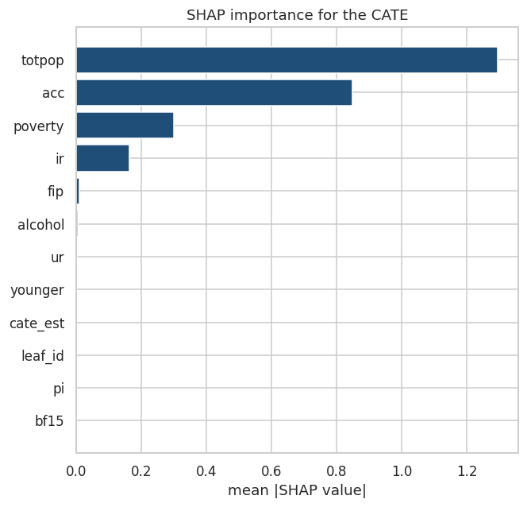
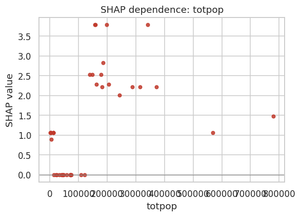

1.1 Causal Tree: Single Tree for Heterogeneous Treatment Effects
Overview
A Causal Tree (CT) is a machine learning method introduced by Athey & Imbens (2016) for estimating Heterogeneous Treatment Effects (HTE). Rather than asking “does a treatment work on average?”, it asks:
“For whom does it work, and by how much?”
In a randomized experiment, the Average Treatment Effect (ATE) tells you the mean outcome difference between treated and control groups — but individuals respond differently. For example:
A drug may help younger patients dramatically while doing nothing for older ones.
A job training program may benefit people without college degrees but be irrelevant for those with one.
The Causal Tree finds these subgroup differences automatically by partitioning the covariate space into regions with meaningfully different treatment effects, called Conditional Average Treatment Effects (CATEs).
How it differs from a standard regression tree
Standard decision tree
Causal tree
Splits on
Variance in outcome \(Y\)
Variance in treatment effect \(\tau\)
Estimation
In-sample (same data)
Honest (held-out sample)
Output
Predicted \(\hat{Y}\)
Estimated CATE \(\pm\) confidence interval
Goal
Prediction
Causal inference
Causal Tree Algorithm
The algorithm follows four steps, each building on the last.
Step 1 — Honest estimation (key innovation)
Standard regression trees use the same data to find splits and estimate values in leaves — this leads to overfitting and biased estimates. The Causal Tree avoids this with honesty:
The training data is randomly split into two halves:
Splitting sample — used only to decide where to split the tree.
Estimation sample — used only to estimate treatment effects in each leaf.
This separation prevents overfitting and makes CATE estimates statistically valid for inference.
Step 2 — Splitting criterion
At each node, the algorithm searches over all features and split points. Instead of minimizing MSE of \(Y\), it maximizes the variance in treatment effects between child nodes:
Because of honesty, these estimates are unbiased and asymptotically normal — so valid confidence intervals can be constructed.
Step 4 — Cross-fitting for efficiency
In practice, the roles of splitting and estimation samples are swapped and results combined (analogous to cross-validation), so all data contributes to both steps without sacrificing honesty.
Identification Assumptions
For a Causal Tree to produce valid causal estimates, three assumptions must hold:
1. Unconfoundedness — Conditional on covariates \(X\), treatment assignment is as good as random: \[W_i \perp \!\!\! \perp (Y_i(0), Y_i(1)) \mid X_i\] This holds by design in randomized experiments and must be argued for in observational studies.
2. Overlap — Both treated and control units must exist within every leaf: \[0 < P(W_i = 1 \mid X_i) < 1 \quad \forall \, X_i\] The minimum leaf size hyperparameter enforces this in practice.
3. SUTVA — Stable Unit Treatment Value Assumption: one unit’s treatment does not affect another’s outcome (no interference).
Compared to standard regression trees
Regression tree
Causal tree
Splits on
Variance in Y
Variance in treatment effects
Estimation
In-sample
Honest (held-out sample)
Output
Predicted Y
CATE ± confidence interval
Goal
Prediction
Causal inference
Practical use
The single causal tree is interpretable and produces valid statistical tests, but it can have high variance (a slightly different sample gives a quite different tree). The natural extension is the Causal Forest (Wager & Athey, 2018), which averages many honest causal trees — much like random forests improve on single decision trees — to get lower variance CATE estimates. Libraries like grf in R and EconML in Python implement both.
A single causal tree is a decision tree that partitions data to identify subgroups with different treatment effects.
Standard Decision Tree
Causal Tree
Predicts outcome \(Y\)
Estimates treatment effect \(\tau\)
Splits to minimize MSE of \(Y\)
Splits to maximize difference in \(\tau\) between children
Output: Predicted \(Y\)
Output: Estimated CATE (Conditional Average Treatment Effect)
Key Innovation: Honest Estimation
Data is split into two subsamples:
Training sample: Determines where to split the tree
Estimation sample: Calculates treatment effects in each leaf
This prevents overfitting and yields unbiased causal estimates
When NOT to Use a Single Causal Tree
Small samples (< 200 observations per subgroup): Estimates will be unstable High-dimensional covariates (p > n): Use causal forests or regularization first Primary goal is prediction accuracy: Forests outperform single trees Weak overlap / poor common support: If propensity of repeal is near 0 or 1 in some states, consider matching first
Limitations of Single Causal Trees
High variance: Estimates can be noisy, especially with small samples or many covariates
Instability: Small changes in data can lead to different splits
Bias-variance tradeoff: Honest estimation reduces bias but can increase variance
Interpretabilitycan be challenging if tree is large or has many splits
Pruning is crucial to avoid overfitting, but optimal pruning can be difficult to determine
Does not leverage information across similar subgroups (unlike forests), so may miss subtle patterns
Requires careful tuning of parameters (minsize, cp, maxdepth) to balance fit and generalization
Causal trees are a powerful tool for uncovering heterogeneous treatment effects in observational data. In this tutorial, we’ll build a single causal tree with an honest causal tree written in Python, which implements the honest estimation approach proposed by Athey and Imbens (2016). We use a synthetic and a real-world dataset with known treatment effect heterogeneity to illustrate the method. By the end of this tutorial, you’ll understand how to fit a causal tree, interpret its structure, and validate the estimated treatment effects.
Overview
A Causal Tree (CT) is a machine learning method introduced by Athey & Imbens (2016) for estimating Heterogeneous Treatment Effects (HTE). Rather than asking “does a treatment work on average?”, it asks:
“For whom does it work, and by how much?”
In a randomized experiment, the Average Treatment Effect (ATE) tells you the mean outcome difference between treated and control groups — but individuals respond differently. For example:
A drug may help younger patients dramatically while doing nothing for older ones.
A job training program may benefit people without college degrees but be irrelevant for those with one.
The Causal Tree finds these subgroup differences automatically by partitioning the covariate space into regions with meaningfully different treatment effects, called Conditional Average Treatment Effects (CATEs).
How it differs from a standard regression tree
Standard decision tree
Causal tree
Splits on
Variance in outcome \(Y\)
Variance in treatment effect \(\tau\)
Estimation
In-sample (same data)
Honest (held-out sample)
Output
Predicted \(\hat{Y}\)
Estimated CATE \(\pm\) confidence interval
Goal
Prediction
Causal inference
Causal Tree Algorithm
The algorithm follows four steps, each building on the last.
Step 1 — Honest estimation (key innovation)
Standard regression trees use the same data to find splits and estimate values in leaves — this leads to overfitting and biased estimates. The Causal Tree avoids this with honesty:
The training data is randomly split into two halves:
Splitting sample — used only to decide where to split the tree.
Estimation sample — used only to estimate treatment effects in each leaf.
This separation prevents overfitting and makes CATE estimates statistically valid for inference.
Step 2 — Splitting criterion
At each node, the algorithm searches over all features and split points. Instead of minimizing MSE of \(Y\), it maximizes the variance in treatment effects between child nodes:
Because of honesty, these estimates are unbiased and asymptotically normal — so valid confidence intervals can be constructed.
Step 4 — Cross-fitting for efficiency
In practice, the roles of splitting and estimation samples are swapped and results combined (analogous to cross-validation), so all data contributes to both steps without sacrificing honesty.
Identification Assumptions
For a Causal Tree to produce valid causal estimates, three assumptions must hold:
1. Unconfoundedness — Conditional on covariates \(X\), treatment assignment is as good as random: \[W_i \perp \!\!\! \perp (Y_i(0), Y_i(1)) \mid X_i\] This holds by design in randomized experiments and must be argued for in observational studies.
2. Overlap — Both treated and control units must exist within every leaf: \[0 < P(W_i = 1 \mid X_i) < 1 \quad \forall \, X_i\] The minimum leaf size hyperparameter enforces this in practice.
3. SUTVA — Stable Unit Treatment Value Assumption: one unit’s treatment does not affect another’s outcome (no interference).
Compared to standard regression trees
Regression tree
Causal tree
Splits on
Variance in Y
Variance in treatment effects
Estimation
In-sample
Honest (held-out sample)
Output
Predicted Y
CATE ± confidence interval
Goal
Prediction
Causal inference
Practical use
The single causal tree is interpretable and produces valid statistical tests, but it can have high variance (a slightly different sample gives a quite different tree). The natural extension is the Causal Forest (Wager & Athey, 2018), which averages many honest causal trees — much like random forests improve on single decision trees — to get lower variance CATE estimates. PyCausalML and EconML both implement causal trees and causal forests.
Key Innovation: Honest Estimation
Data is split into two subsamples:
Training sample: Determines where to split the tree
Estimation sample: Calculates treatment effects in each leaf
This prevents overfitting and yields unbiased causal estimates
When NOT to Use a Single Causal Tree
Small samples (< 200 observations per subgroup): Estimates will be unstable
High-dimensional covariates (p > n): Use causal forests or regularization first
Primary goal is prediction accuracy: Forests outperform single trees
Weak overlap / poor common support: If propensity of treatment is near 0 or 1 in some groups, consider matching first
Limitations of Single Causal Trees
High variance: Estimates can be noisy, especially with small samples or many covariates
Instability: Small changes in data can lead to different splits
Bias-variance tradeoff: Honest estimation reduces bias but can increase variance
Interpretability can be challenging if tree is large or has many splits
Pruning is crucial to avoid overfitting, but optimal pruning can be difficult to determine
Does not leverage information across similar subgroups (unlike forests), so may miss subtle patterns
Requires careful tuning of parameters (minsize, cp, maxdepth) to balance fit and generalization
This tutorial uses CausalTree from PyCausalML. We’ll cover:
Getting started with a causal tree on simulated data
A use case fit on the IHDP file in this repository
Each section includes:
Data preparation
Model fitting with causal_tree()
Visualization of the tree and treatment effects
Interpretation of results
Validation checks for balance and heterogeneity
Overview
Overview
A Causal Tree (CT) is a machine learning method introduced by Athey & Imbens (2016) for estimating Heterogeneous Treatment Effects (HTE). Rather than asking “does a treatment work on average?”, it asks:
“For whom does it work, and by how much?”
In a randomized experiment, the Average Treatment Effect (ATE) tells you the mean outcome difference between treated and control groups — but individuals respond differently. For example:
A drug may help younger patients dramatically while doing nothing for older ones.
A job training program may benefit people without college degrees but be irrelevant for those with one.
The Causal Tree finds these subgroup differences automatically by partitioning the covariate space into regions with meaningfully different treatment effects, called Conditional Average Treatment Effects (CATEs).
How it differs from a standard regression tree
Standard decision tree
Causal tree
Splits on
Variance in outcome \(Y\)
Variance in treatment effect \(\tau\)
Estimation
In-sample (same data)
Honest (held-out sample)
Output
Predicted \(\hat{Y}\)
Estimated CATE \(\pm\) confidence interval
Goal
Prediction
Causal inference
Causal Tree Algorithm
The algorithm follows four steps, each building on the last.
Step 1 — Honest estimation (key innovation)
Standard regression trees use the same data to find splits and estimate values in leaves — this leads to overfitting and biased estimates. The Causal Tree avoids this with honesty:
The training data is randomly split into two halves:
Splitting sample — used only to decide where to split the tree.
Estimation sample — used only to estimate treatment effects in each leaf.
This separation prevents overfitting and makes CATE estimates statistically valid for inference.
Step 2 — Splitting criterion
At each node, the algorithm searches over all features and split points. Instead of minimizing MSE of \(Y\), it maximizes the variance in treatment effects between child nodes:
Because of honesty, these estimates are unbiased and asymptotically normal — so valid confidence intervals can be constructed.
Step 4 — Cross-fitting for efficiency
In practice, the roles of splitting and estimation samples are swapped and results combined (analogous to cross-validation), so all data contributes to both steps without sacrificing honesty.
Identification Assumptions
For a Causal Tree to produce valid causal estimates, three assumptions must hold:
1. Unconfoundedness — Conditional on covariates \(X\), treatment assignment is as good as random: \[W_i \perp \!\!\! \perp (Y_i(0), Y_i(1)) \mid X_i\] This holds by design in randomized experiments and must be argued for in observational studies.
2. Overlap — Both treated and control units must exist within every leaf: \[0 < P(W_i = 1 \mid X_i) < 1 \quad \forall \, X_i\] The minimum leaf size hyperparameter enforces this in practice.
3. SUTVA — Stable Unit Treatment Value Assumption: one unit’s treatment does not affect another’s outcome (no interference).
Compared to standard regression trees
Regression tree
Causal tree
Splits on
Variance in Y
Variance in treatment effects
Estimation
In-sample
Honest (held-out sample)
Output
Predicted Y
CATE ± confidence interval
Goal
Prediction
Causal inference
Practical use
The single causal tree is interpretable and produces valid statistical tests, but it can have high variance (a slightly different sample gives a quite different tree). The natural extension is the Causal Forest (Wager & Athey, 2018), which averages many honest causal trees — much like random forests improve on single decision trees — to get lower variance CATE estimates. PyCausalML and EconML both implement causal trees and causal forests.
A single causal tree is a decision tree that partitions data to identify subgroups with different treatment effects.
Standard Decision Tree
Causal Tree
Predicts outcome \(Y\)
Estimates treatment effect \(\tau\)
Splits to minimize MSE of \(Y\)
Splits to maximize difference in \(\tau\) between children
Output: Predicted \(Y\)
Output: Estimated CATE (Conditional Average Treatment Effect)
Key Innovation: Honest Estimation
Data is split into two subsamples:
Training sample: Determines where to split the tree
Estimation sample: Calculates treatment effects in each leaf
This prevents overfitting and yields unbiased causal estimates
When NOT to Use a Single Causal Tree
Small samples (< 200 observations per subgroup): Estimates will be unstable High-dimensional covariates (p > n): Use causal forests or regularization first Primary goal is prediction accuracy: Forests outperform single trees Weak overlap / poor common support: If propensity of repeal is near 0 or 1 in some states, consider matching first
Limitations of Single Causal Trees
High variance: Estimates can be noisy, especially with small samples or many covariates
Instability: Small changes in data can lead to different splits
Bias-variance tradeoff: Honest estimation reduces bias but can increase variance
Interpretabilitycan be challenging if tree is large or has many splits
Pruning is crucial to avoid overfitting, but optimal pruning can be difficult to determine
Does not leverage information across similar subgroups (unlike forests), so may miss subtle patterns
Requires careful tuning of parameters (minsize, cp, maxdepth) to balance fit and generalization
Setup
This notebook fits CausalTree from PyCausalML (pycausalml.tree_based_models).
fit(X, treatment, y) returns the fitted estimator. predict returns a NumPy array of conditional average treatment effects. A fitted model also exposes explain and plot_shap.
Install the package from this repository, with the plotting and boosting extras.
IHDP is read with load_ihdp from causal_tree_methods.py in this folder.
Code
import subprocessimport sysfrom pathlib import Pathdef _repo_root() -> Path: here = Path.cwd().resolve()for cand in [here, *here.parents]:if (cand /"pyproject.toml").is_file() and (cand /"src"/"pycausalml").is_dir():return candraiseFileNotFoundError("PyCausalML repository was not found. Run this notebook from the repository." )root = _repo_root()subprocess.check_call([ sys.executable, "-m", "pip", "install", "-q", "-e", f"{root}[plot,boost,shap]", "statsmodels",])print("PyCausalML ready.")
PyCausalML ready.
Code
%matplotlib inlineimport matplotlib.pyplot as pltimport numpy as npimport pandas as pdimport seaborn as snsfrom pycausalml import ( CausalTree, synthetic_data,)from pycausalml.tree_based_models import ( plot_causal_tree,)import sysfrom pathlib import Pathdef _add_methods_path(): here = Path.cwd().resolve()for cand in [here, *here.parents]:for rel in ( Path("causal_tree_methods.py"), Path("Tutorials") /"05_01_Tree_Based_Models"/"causal_tree_methods.py", Path("Notebook") /"05_01_Tree_Based_Models"/"causal_tree_methods.py", ): path = cand / relif path.is_file(): sys.path.insert(0, str(path.parent))returnraiseFileNotFoundError("causal_tree_methods.py was not found")_add_methods_path()from causal_tree_methods import ( load_ihdp,)def find_repo_root(start=None) -> Path: here = Path(start or Path.cwd()).resolve()for cand in [here, *here.parents]:if (cand /"Data").is_dir() and (cand /"Image").is_dir():return candraiseFileNotFoundError("Could not find a folder containing Data/ and Image/.")def data_path(filename: str) -> Path:return find_repo_root() /"Data"/ filenamesns.set_theme(style="whitegrid")plt.rcParams["figure.dpi"] =110print("Imported PyCausalML")
Imported PyCausalML
Getting started with simulated data
We use simulated data from synthetic_data() to illustrate fitting a causal tree, estimating treatment effects on a test set, and visualizing results. The data has a known heterogeneous treatment effect structure, which is useful for validation.
Data generation
Generate data with synthetic_data(): a nonlinear baseline, heterogeneous treatment effects, and a propensity that depends on covariates.
Fit an honest causal tree with CausalTree. Use the training sample only for structure and estimation splits.
Code
covar_names_sim = [c for c in df_train.columns if c notin {"outcome", "treatment", "tau_true"}]ct_sim = CausalTree(min_samples_leaf=20, max_depth=4, honest=True, random_state=42)ct_sim.fit( df_train[covar_names_sim].to_numpy(), df_train["treatment"].to_numpy(), df_train["outcome"].to_numpy(), feature_names=covar_names_sim,)print("Leaves:", len(ct_sim.rules()))print(pd.DataFrame(ct_sim.rules()).round(3))
Leaves: 15
cate n conditions
0 0.188 48 X1 <= -0.112 AND X10 <= -0.154 AND X5 <= -0.14...
1 0.272 26 X1 <= -0.112 AND X10 <= -0.154 AND X5 <= -0.14...
2 -0.135 51 X1 <= -0.112 AND X10 <= -0.154 AND X5 > -0.148...
3 -0.110 45 X1 <= -0.112 AND X10 <= -0.154 AND X5 > -0.148...
4 0.642 124 X1 <= -0.112 AND X10 > -0.154 AND X10 <= 1.203...
5 0.172 27 X1 <= -0.112 AND X10 > -0.154 AND X10 <= 1.203...
6 0.410 40 X1 <= -0.112 AND X10 > -0.154 AND X10 > 1.203
7 0.019 29 X1 > -0.112 AND X2 <= 0.183 AND X3 <= 0.864 AN...
8 -0.103 172 X1 > -0.112 AND X2 <= 0.183 AND X3 <= 0.864 AN...
9 0.764 26 X1 > -0.112 AND X2 <= 0.183 AND X3 > 0.864 AND...
10 0.050 21 X1 > -0.112 AND X2 <= 0.183 AND X3 > 0.864 AND...
11 1.051 19 X1 > -0.112 AND X2 > 0.183 AND X11 <= -0.452 A...
12 2.221 47 X1 > -0.112 AND X2 > 0.183 AND X11 <= -0.452 A...
13 2.164 66 X1 > -0.112 AND X2 > 0.183 AND X11 > -0.452 AN...
14 2.160 59 X1 > -0.112 AND X2 > 0.183 AND X11 > -0.452 AN...
Estimating treatment effects on test data
Predict CATE for the test set and compare to the true (simulated) treatment effect.
Code
df_test = df_test.copy()df_test["cate_pred"] = ct_sim.predict(df_test[covar_names_sim].to_numpy())valid = df_test[["cate_pred", "tau_true"]].dropna()print("Test set CATE summary:")print(f" Predicted CATE: mean = {df_test['cate_pred'].mean():.4f}, sd = {df_test['cate_pred'].std():.4f}")print(f" True CATE: mean = {df_test['tau_true'].mean():.4f}, sd = {df_test['tau_true'].std():.4f}")print(" Correlation (pred vs true):", round(valid["cate_pred"].corr(valid["tau_true"]), 4))
Test set CATE summary:
Predicted CATE: mean = 0.6275, sd = 0.8586
True CATE: mean = 0.5112, sd = 0.8925
Correlation (pred vs true): 0.6565
Use Case
We use the abortion dataset from the {causaldata} package, which examines the effect of abortion legalization (early repeal) on gonorrhea incidence among 15–19 year olds as a proxy for risky sexual behavior. By the end of this tutorial, you’ll understand how to use causal trees to identify subgroups where the policy had stronger (or weaker) effects, and how to validate your findings.
Data
The abortion dataset contains state-year observations on gonorrhea rates among 15–19 year olds, with a binary indicator for early repeal of abortion prohibition. This dataset is commonly used to study the effects of abortion legalization on risky sexual behavior among teenagers, proxied by gonorrhea rates.
This dataset is commonly used to study the causal effects of abortion legalization policies (specifically, early repeal of abortion prohibitions in certain U.S. states) on risky sexual behavior among teenagers. Risky behavior is proxied by the incidence of gonorrhea (a sexually transmitted infection) among 15–19 year olds.
Here are the most important columns:
fip — State FIPS code (numeric identifier for each U.S. state)
age — Age in years (focused on 15–19 year olds)
race — Race: 1 = white, 2 = black (or similar coding)
year — Calendar year
t — A rescaled time variable (often centered around policy change for DiD)
sex — Sex: 1 = male, 2 = female
totpop — Total population (state-level)
ir — Incarcerated males per 100,000 (proxy for criminal justice environment)
crack — Crack cocaine index (proxy for drug epidemic intensity)
alcohol — Alcohol consumption per capita
income — Real income per capita
ur — State unemployment rate
poverty — Poverty rate
repeal — Treatment indicator: 1 = state had an early repeal of abortion prohibition (treatment group), 0 = otherwise (control group). This is the main policy/treatment variable.
pi — Parental involvement law in effect (another policy control)
bf15 — Indicator: Is a black female in the 15–19 age group (useful for subgroup analysis)
Load Data
The outcome variable is typically lnr (logged gonorrhea rate per 100,000 population among 15–19 year olds), which measures the logged incidence of gonorrhea as a proxy for risky sexual behavior.
Code
from causaldata import abortionimport pandas as pd# load_pandas() returns a statsmodels Dataset. The table is on .data.abortion_df = abortion.load_pandas().data.copy()print("Abortion dataset loaded. Columns:", list(abortion_df.columns))# The NOTE, DESCRLONG, and SOURCE attributes are part of the `abortion` objectprint(abortion.NOTE)print(abortion.DESCRLONG)print(abortion.SOURCE)
Abortion dataset loaded. Columns: ['fip', 'age', 'race', 'year', 'sex', 'totpop', 'ir', 'crack', 'alcohol', 'income', 'ur', 'poverty', 'repeal', 'acc', 'wht', 'male', 'lnr', 't', 'younger', 'fa', 'pi', 'bf15']
::
Number of observations - 19584
Number of variables - 22
Variables name definitions::
fip - State FIPS code
age - Age in years
race - Race: 1 = white, 2 = black
year - Year
t - Year but on a different scale
sex - Sex: 1 = male, 2 = female
totpop - Total population
ir - Incarcerated Males per 100,000
crack - Crack index
alcohol - Alcohol consumption per capita
income - Real income per capita
ur - State unemployment rate
poverty - Poverty rate
repeal - In a state with an early repeal of abortion prohibition
acc - AIDS mortality per 100,000 cumulative in t, t-1, t-2, t-3
wht - White Indicator
male - Male Indicator
lnr - Logged gonnorhea cases per 100,000 in 15-19 year olds
younger - From the younger group
fa - State-younger interaction
pi - Parental involvement law in effect
bf15 - Is a black female in the 15-19 age group
This data looks at the effect of abortion legalization on the incidence of gonnorhea among 15-19 year olds, as a measure of risky behavior. Treatment is whether abortion is legalized at the time that the eventual 15-19 year olds are born. This data is used in the Difference-in-Differences chapter of Causal Inference: The Mixtape by Cunningham.
Cunningham, Scott, and Christopher Cornwell. 2013. “The Long-Run Effect of Abortion on Sexually Transmitted Infections.” American Law and Economics Review 15 (1): 381–407.
Data Visualization
Code
import matplotlib.pyplot as pltfig, axes = plt.subplots(2, 2, figsize=(11, 7))# 1. Treatment group sizes (early repeal vs not)counts = abortion_df.loc[:, abortion_df.columns.str.lower() =="repeal"].squeeze().value_counts().sort_index()axes[0, 0].bar(["No Early Repeal", "Early Repeal"], counts.to_numpy(), color=["skyblue", "tomato"])axes[0, 0].set_title("Treatment group sizes")axes[0, 0].set_ylabel("Number of state-year observations")# 2. Outcome by treatment (lnr)abortion_df.boxplot(column="lnr", by="repeal", ax=axes[0, 1])axes[0, 1].set_title("Logged gonorrhea rate by repeal status")axes[0, 1].set_xlabel("Early repeal (1=Yes, 0=No)")axes[0, 1].set_ylabel("ln(gonorrhea rate)")plt.suptitle("")# 3. Real income per capita by treatmentabortion_df.boxplot(column="income", by="repeal", ax=axes[1, 0])axes[1, 0].set_title("Real income per capita by repeal status")axes[1, 0].set_xlabel("Early repeal (1=Yes, 0=No)")axes[1, 0].set_ylabel("Real income per capita")# 4. Alcohol consumption per capita by treatmentabortion_df.boxplot(column="alcohol", by="repeal", ax=axes[1, 1])axes[1, 1].set_title("Alcohol consumption by repeal status")axes[1, 1].set_xlabel("Early repeal (1=Yes, 0=No)")axes[1, 1].set_ylabel("Alcohol per capita")plt.suptitle("Abortion dataset: Treatment, outcome, and key covariates")fig.tight_layout()plt.show()

Data Processing for Causal Tree
Code
feature_names = abortion_df.columns.drop(['lnr', 'repeal'])X = abortion_df[feature_names].to_numpy()Y = abortion_df['lnr'].to_numpy()W = abortion_df['repeal'].to_numpy()# Optionally, drop near-zero-variance columns:keep = X.var(axis=0) >1e-10X = X[:, keep]feature_names = [name for name, flag inzip(feature_names, keep) if flag]print("Covariates used:", feature_names)print("n =", len(Y), " treated =", int(W.sum()))
# Fit a causal tree on the abortion datasetct_model_abortion = CausalTree(min_samples_leaf=15, max_depth=4, honest=True, random_state=2024)# Remove rows with NaN or infinite in 'outcome' before fittingdf_clean = df[np.isfinite(df["outcome"])]ct_model_abortion.fit( df_clean[feature_names].to_numpy(), df_clean["treatment"].to_numpy(), df_clean["outcome"].to_numpy(), feature_names=feature_names,)print("Leaves (abortion data):", len(ct_model_abortion.rules()))print(pd.DataFrame(ct_model_abortion.rules()).round(3))
Leaves (abortion data): 15
cate n conditions
0 -0.138 422 poverty <= 12.900 AND ir <= 150.374 AND alcoho...
1 -0.447 202 poverty <= 12.900 AND ir <= 150.374 AND alcoho...
2 -0.827 237 poverty <= 12.900 AND ir <= 150.374 AND alcoho...
3 0.455 969 poverty <= 12.900 AND ir <= 150.374 AND alcoho...
4 -0.542 1184 poverty <= 12.900 AND ir > 150.374 AND totpop ...
5 -1.220 572 poverty <= 12.900 AND ir > 150.374 AND totpop ...
6 1.996 99 poverty <= 12.900 AND ir > 150.374 AND totpop ...
7 -0.445 355 poverty <= 12.900 AND ir > 150.374 AND totpop ...
8 2.416 1109 poverty > 12.900 AND acc <= 16.323 AND totpop ...
9 0.879 182 poverty > 12.900 AND acc <= 16.323 AND totpop ...
10 0.413 92 poverty > 12.900 AND acc <= 16.323 AND totpop ...
11 -0.904 137 poverty > 12.900 AND acc > 16.323 AND totpop <...
12 -2.343 613 poverty > 12.900 AND acc > 16.323 AND totpop <...
13 1.440 710 poverty > 12.900 AND acc > 16.323 AND totpop >...
14 -0.861 287 poverty > 12.900 AND acc > 16.323 AND totpop >...
Key parameters
Parameter
Purpose
Value used here
honest=True
Split structure and leaf effects on different rows
Always on
min_samples_leaf
Minimum rows in a child node
15–20
max_depth
Maximum tree depth
4
fit(X, treatment, y) holds out the estimation sample when honest=True.
leaf_rules_abortion = pd.DataFrame(ct_model_abortion.rules())print("All leaf rules (CATE from the estimation sample, abortion data):")print(leaf_rules_abortion.round(3).to_string(index=False))notable_abortion = leaf_rules_abortion[leaf_rules_abortion["cate"].abs() >1]print("\nLeaves with |CATE| > 1 (abortion data):")print(notable_abortion.round(3).to_string(index=False) iflen(notable_abortion) else"None")
All leaf rules (CATE from the estimation sample, abortion data):
cate n conditions
-0.138 422 poverty <= 12.900 AND ir <= 150.374 AND alcohol <= 2.200 AND ur <= 5.092
-0.447 202 poverty <= 12.900 AND ir <= 150.374 AND alcohol <= 2.200 AND ur > 5.092
-0.827 237 poverty <= 12.900 AND ir <= 150.374 AND alcohol > 2.200 AND totpop <= 35505.000
0.455 969 poverty <= 12.900 AND ir <= 150.374 AND alcohol > 2.200 AND totpop > 35505.000
-0.542 1184 poverty <= 12.900 AND ir > 150.374 AND totpop <= 120230.000 AND totpop <= 35854.760
-1.220 572 poverty <= 12.900 AND ir > 150.374 AND totpop <= 120230.000 AND totpop > 35854.760
1.996 99 poverty <= 12.900 AND ir > 150.374 AND totpop > 120230.000 AND fip <= 12.000
-0.445 355 poverty <= 12.900 AND ir > 150.374 AND totpop > 120230.000 AND fip > 12.000
2.416 1109 poverty > 12.900 AND acc <= 16.323 AND totpop <= 206020.800
0.879 182 poverty > 12.900 AND acc <= 16.323 AND totpop > 206020.800 AND age <= 30.000
0.413 92 poverty > 12.900 AND acc <= 16.323 AND totpop > 206020.800 AND age > 30.000
-0.904 137 poverty > 12.900 AND acc > 16.323 AND totpop <= 135155.000 AND totpop <= 13765.000
-2.343 613 poverty > 12.900 AND acc > 16.323 AND totpop <= 135155.000 AND totpop > 13765.000
1.440 710 poverty > 12.900 AND acc > 16.323 AND totpop > 135155.000 AND totpop <= 421382.160
-0.861 287 poverty > 12.900 AND acc > 16.323 AND totpop > 135155.000 AND totpop > 421382.160
Leaves with |CATE| > 1 (abortion data):
cate n conditions
-1.220 572 poverty <= 12.900 AND ir > 150.374 AND totpop <= 120230.000 AND totpop > 35854.760
1.996 99 poverty <= 12.900 AND ir > 150.374 AND totpop > 120230.000 AND fip <= 12.000
2.416 1109 poverty > 12.900 AND acc <= 16.323 AND totpop <= 206020.800
-2.343 613 poverty > 12.900 AND acc > 16.323 AND totpop <= 135155.000 AND totpop > 13765.000
1.440 710 poverty > 12.900 AND acc > 16.323 AND totpop > 135155.000 AND totpop <= 421382.160
Observations with a positive predicted CATE (abortion data):
cate_est 1.500
treatment 0.072
fip 28.700
age 27.571
race 1.328
year 1991.160
sex 1.501
totpop 180885.280
dtype: float64
n = 6923
Cross-Validation Error Plot
Code
imp = ct_model_abortion.feature_importance()order = np.argsort(imp)fig, ax = plt.subplots(figsize=(7, 4))ax.barh(np.array(feature_names)[order], imp[order], color="steelblue")ax.set_xlabel("Share of split gain")ax.set_title("Causal tree feature importance (abortion data)")fig.tight_layout()plt.show()

Test for Heterogeneity
Is there evidence that treatment effects truly vary across subgroups?
Code
obs_var_ab = df_abortion["cate_est"].var()print("Observed variance of CATE estimates (abortion data):", round(obs_var_ab, 4))perm_vars_ab = []for i inrange(100): w_perm = rng_abortion.permutation(df_abortion["treatment"].to_numpy()) leaf_cate = []for _, part in df_abortion.assign(treatment=w_perm).groupby("leaf_id"): leaf_cate.append( part.loc[part["treatment"] ==1, "outcome"].mean()- part.loc[part["treatment"] ==0, "outcome"].mean() ) perm_vars_ab.append(np.nanvar(leaf_cate))p_value_ab =float(np.mean(np.asarray(perm_vars_ab) >= obs_var_ab))print("Permutation p-value for CATE heterogeneity (abortion data):", round(p_value_ab, 3))
Observed variance of CATE estimates (abortion data): 1.9791
Permutation p-value for CATE heterogeneity (abortion data): 0.0
Node 5: age ≤ 17 AND crack < 0.5
├─ n ≈ 1200 observations
├─ Treatment effect: +0.18 log points (~20% higher gonorrhea rate)
├─ Interpretation: In younger teens with low crack index, early repeal is associated
with higher risky behavior (proxied by gonorrhea incidence).
Compact SHAP analysis
Code
# Define feature_names_ab based on the features used to fit ct_model_abortion# Assuming ct_model_abortion was fit on df_abortion with specific columns.# If unsure, you can infer from earlier code. Typically something like:feature_names_ab = [ col for col in df_abortion.columns if col notin ('outcome', 'treatment', 'group', 'fold')]# Pass feature_names explicitly to avoid ValueErrorsv_ab = ct_model_abortion.explain( df_abortion[feature_names_ab].to_numpy(), max_samples=40, random_state=2024, feature_names=feature_names_ab, # added for shape consistency)sv_ab.plot_importance(max_display=12)plt.show()top_ab = feature_names_ab[int(np.argmax(sv_ab.importance()))]sv_ab.plot_dependence(top_ab)plt.show()


Summary and Conclusion
Causal trees are a powerful tool for uncovering treatment effect heterogeneity in observational data. By recursively partitioning the data based on covariates, they identify subgroups where the effect of a treatment (like abortion legalization) on an outcome (like gonorrhea rates) differs. The honest estimation approach ensures that subgroup-specific treatment effect estimates are unbiased and credible. This allows researchers to understand which populations are most affected by the policy and to generate hypotheses about underlying mechanisms. This tutorial demonstrated how to fit a causal tree using CausalTree, interpret the resulting tree structure, and validate findings with permutation tests for heterogeneity. While single trees are interpretable, they can be unstable in small samples or with many covariates. For more robust detection of heterogeneity, consider using causal forests or other ensemble methods. Always validate balance within leaves and interpret findings cautiously, especially in observational policy data where unmeasured confounding may be present.